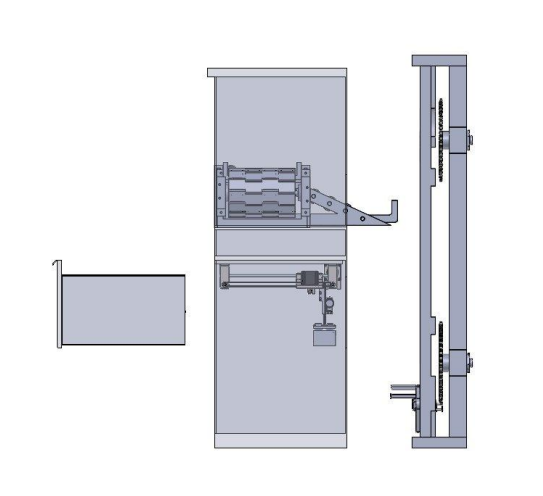

Senior Capstone Toolio
Opted to design a autosorting toolbox.

The project goal is to create an electro-mechanical smart organizer in which a user can place an item on a pad scanner that can identify
the item by type and size, and then the toolbox will organize itself using a robotic-like mechanism. In addition to participating in the overall
process from requirement setting to final fabrication and test, I utilized CAD modeling to analyze different design concepts.
Battle Bots
Robo Jackets Battle Bots 3Ib team member.
Engaged in the RoboJackets club at Georgia Tech, specifically as part of the Three Pound Battle Bots team. Collaborating with a team of
10, we design, manufacture, and operate a functional RC robot aimed at competing with other three-pound robots from Georgia Tech
beyond. Have further developed skills to work with a team on a complex technical project to achieve a goal while staying within
design restraints. Have incorporated knowledge of material science and kinematics to produce a robust, light-weight, effective robot.
Neptr
This is a photo of one of my early projects!

Background information on the Neptr project and what it involved.
Chess Board
This is a mid-year design that we are moving towards manufacturing.
Insights into the Chess Board design and how it was developed.